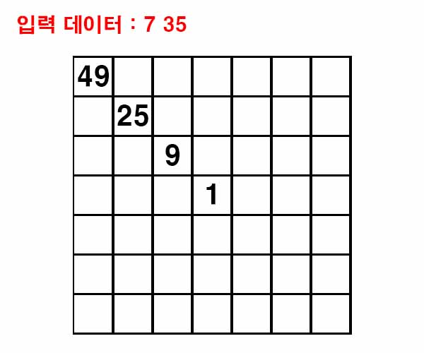
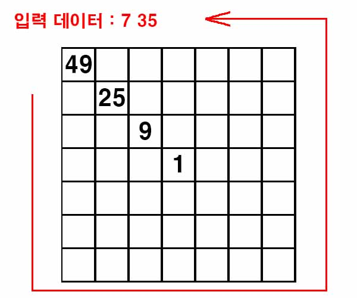
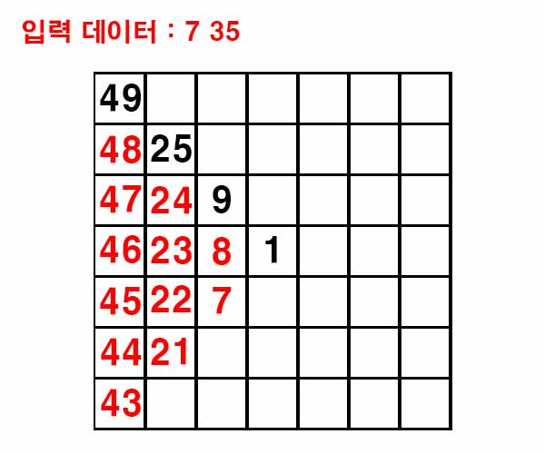
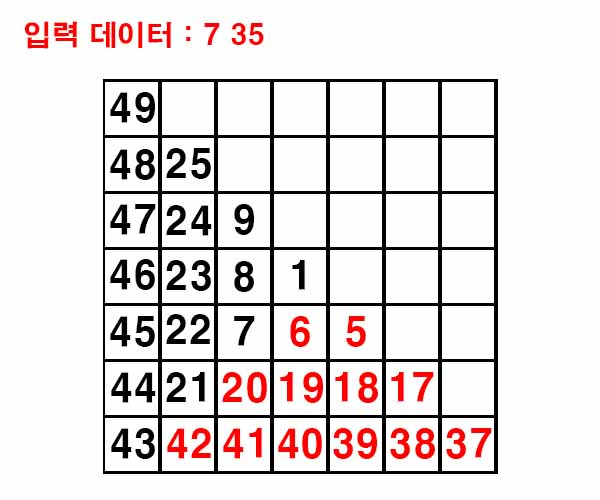
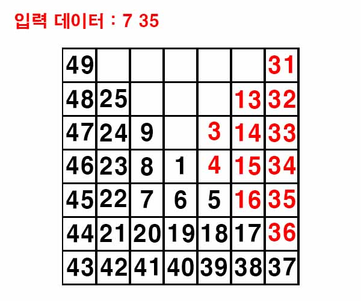
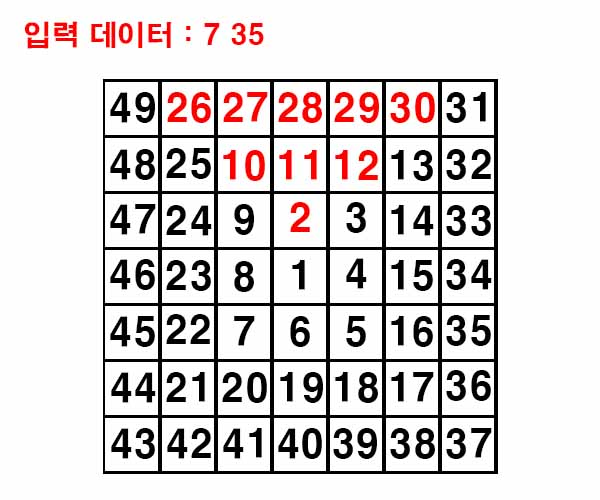
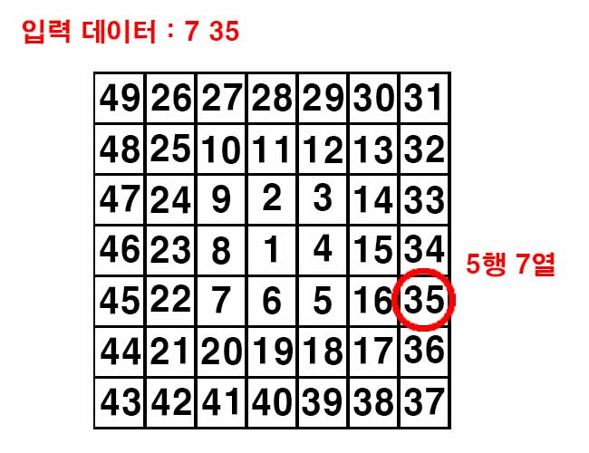

백준 1913. 달팽이
- https://www.acmicpc.net/problem/1913
-
문제 :
홀수인 자연수 N이 주어지면, 다음과 같이 1부터 N2까지의 자연수를 달팽이 모양으로 N×N의 표에 채울 수 있다.
9 2 3 8 1 4 7 6 5
25 10 11 12 13 24 9 2 3 14 23 8 1 4 15 22 7 6 5 16 21 20 19 18 17
N이 주어졌을 때, 이러한 표를 출력하는 프로그램을 작성하시오. 또한 N2 이하의 자연수가 하나 주어졌을 때, 그 좌표도 함께 출력하시오. 예를 들어 N=5인 경우 6의 좌표는 (4,3)이다. -
입력 :
첫째 줄에 홀수인 자연수 N(3 ≤ N ≤ 999)이 주어진다. 둘째 줄에는 위치를 찾고자 하는 N2 이하의 자연수가 하나 주어진다. -
출력 :
N개의 줄에 걸쳐 표를 출력한다. 각 줄에 N개의 자연수를 한 칸씩 띄어서 출력하면 되며, 자릿수를 맞출 필요가 없다. N+1번째 줄에는 입력받은 자연수의 좌표를 나타내는 두 정수를 한 칸 띄어서 출력한다. -
풀이 :
중앙에 있는 1 기준으로 왼쪽 위로 향하는 대각선에 위치한 수는 홀수의 제곱수이다.

이 점을 이용해서 숫자를 채워가기로 했다.
왼쪽 위 대각선을 기준으로 다음 그림과 같은 방향으로 차례대로 값을 구하기로 했다.

각 제곱수를 기준으로 아래로 내려갈수록 1씩 값이 감소하므로 차례대로 값을 저장한다.

그 과정에서 구한 마지막 값을 기준으로 오른쪽으로 갈수록 1씩 값이 감소하므로 차례대로 값을 저장한다.

동일하게 구한 마지막 값을 기준으로 위로 올라갈수록 1씩 값이 감소하므로 차례대로 값을 저장한다.

마지막으로 구한 마지막 값을 기준으로 왼쪽으로 갈수록 1씩 값이 감소하므로 차례대로 값을 저장한다.

이 과정에서 값을 저장할 때 입력받은 값과 동일한 값이 나올 경우 좌표를 따로 저장해둔다.

답을 출력하기 위해 필요한 과정을 모두 마쳤기 때문에 구한 값들을 출력한다.